新建数据库实例
这个专题是关于如何在redhat 4.8上安装orale 9.2.0.8
最后部分分为三部分: 配置TNS以及监听，安装数据库实例
1.设定本地网络服务名
点击add
选择第一个
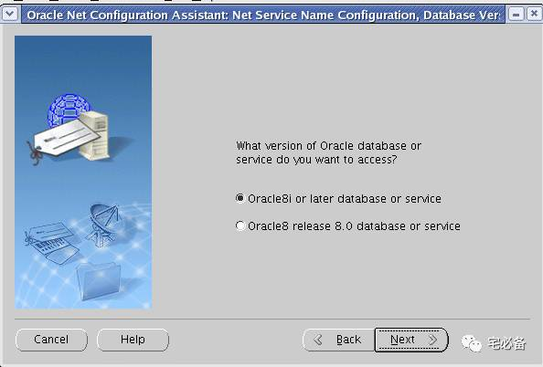
选择服务名
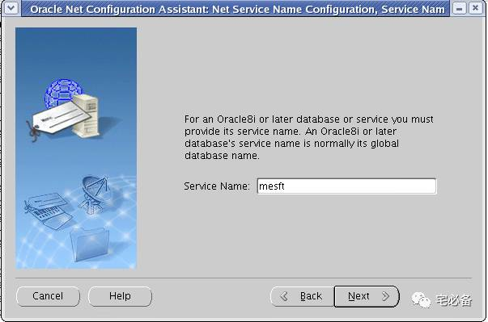
选择TCP
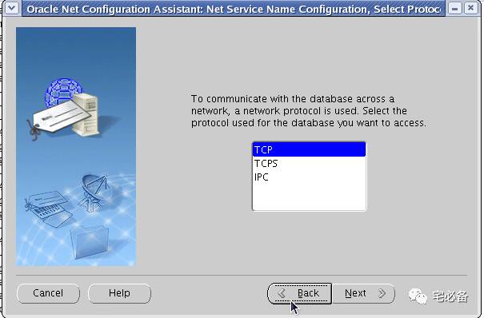
填写本机IP地址
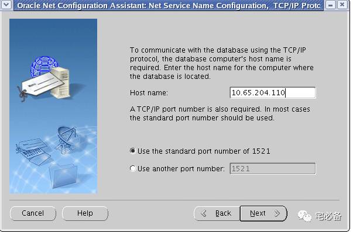
填写网络服务名
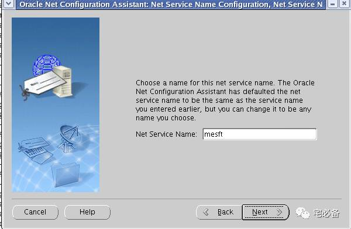
选择No不配置另外的网络服务名
完成配置
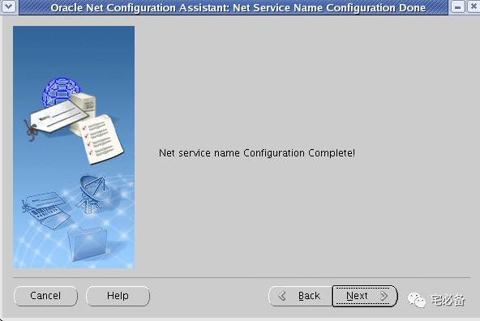
2.配置监听服务
选择Add
设定监听名称
选择TCP
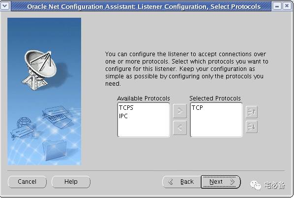
选择端口
不配置另外的监听
配置完成
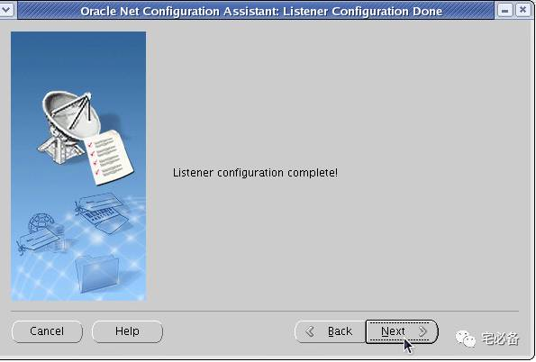
3.实例安装
oracle 用户下 运行 dbca
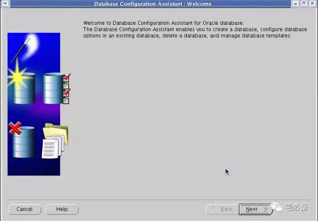
创建数据库
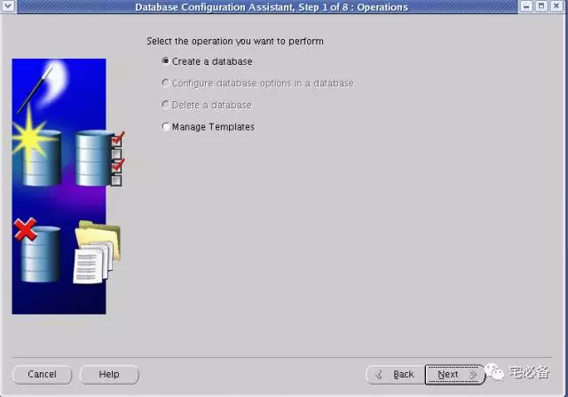
选择 New Database
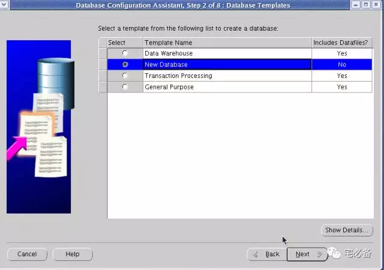
指定SID
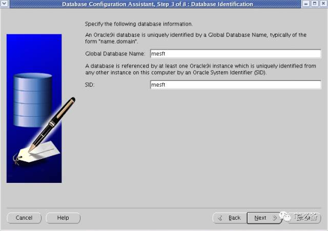
选择下一步
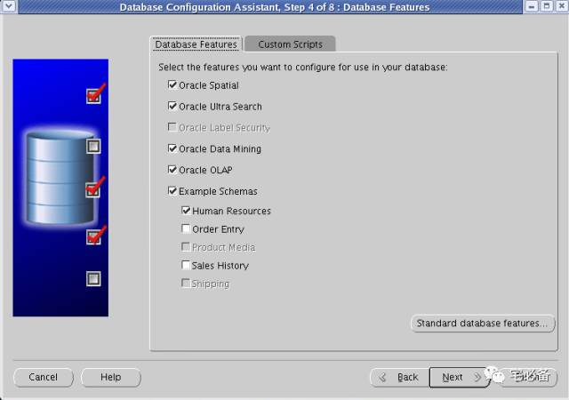
选择数据库类型
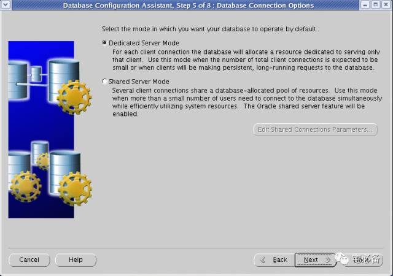
选择内存等信息
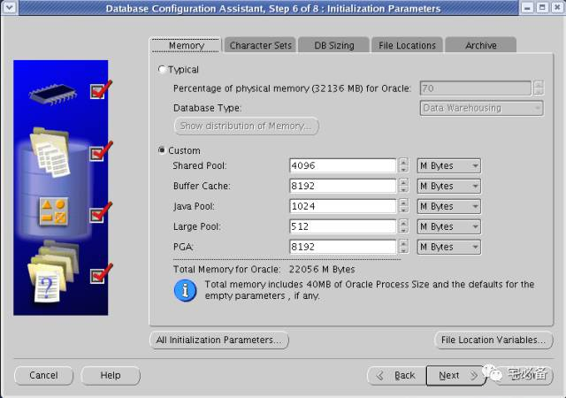
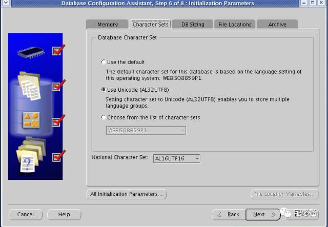
确认数据文件信息
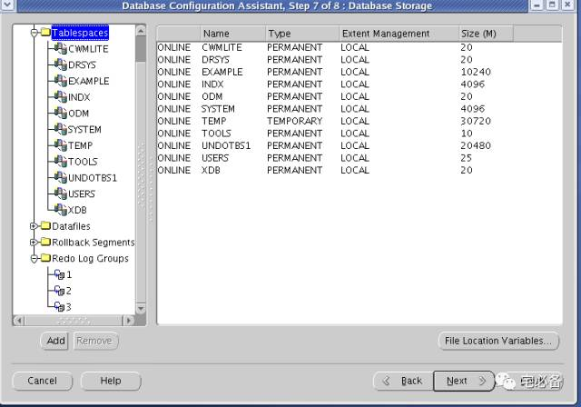
开始创建
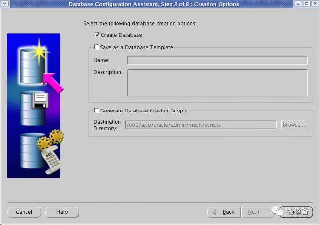
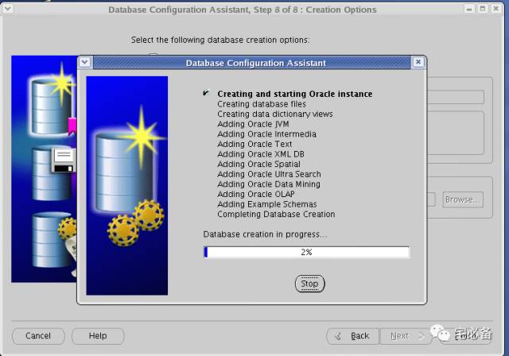
设定密码
到这里 在Redhat 4.8上安装Oracle9.2.0.8 已全部介绍完毕，谢谢观看